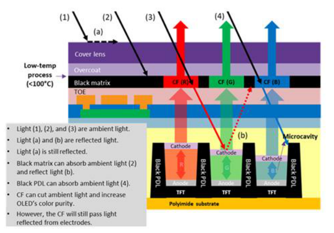

디스플레이 부품소재 — 발광재료는 «면적×층수»로 크고, 편광판 자리는 Black PDL·컬러필터가 차지하며, 폴더블 커버는 UTG+CPI 2겹으로
원천 한계
- 디스플레이 캐시 96건 중 2025년 13건·2026년 83건 → 실제 커버 기간은 2025-08~2026-11
- 소재 원천은 발광재료·Black PDL(덕산네오룩스 리포트 다수)과 폴더블 부품에 몰림
- 편광판 업체·가격, 드라이버IC 시장, LED 칩·패키지 산업은 원천 사실상 0건 ⚠ — 공급망 표·TV 비교 문단 수준만 있음
한눈에 보기
결론
- 발광재료 = 패널 면적 × 발광층 수. IT OLED(대면적)와 탠덤(2층)이 겹치는 2026~2027년이 성장 구간, 다만 중국 소재사가 자국 패널사에서 점유율 확대 (신한 02-26; KIRS 03-13)
- 편광판을 빼는 CoE(무편광) 구조가 폴더블 → 바 타입 → IT로 번짐 → 핵심 소재 Black PDL 수요가 2026년 적용 기기 약 3배 (현대차 02-12; KIRS 03-13)
- 폴더블 커버는 UTG 위 보호필름이 PET → CPI로 바뀔 가능성(애플). 칩플레이션發 물량 조정이 2026년 말 리스크 (IBK 08-26; 삼성 11-09)
| 지표 | 값 | 출처 |
|---|---|---|
| OLED 부품·소재 시장 | 172억$ (25) → 202억$ (29) | (KIRS, 03-13) |
| OLED 발광재료 시장 | 22.5억$ (25), 한국 약 40% | (KIRS, 03-13) |
| 무편광(CoE) 패널 출하 | 약 3,100만대 (25) → 1.9억대 (30) | (iM, 03-09) |
| 탠덤 소재 사용량 | +50% (발광층 2개) | (신한, 02-26) |
| 미니LED TV 출하 | 약 1,200만대 (25) | (신한, 02-26) |
flowchart TB CW["커버<br/>UTG · CPI · PET"] --> PO["외광 차단<br/>편광판 → CoE(컬러필터+BM)"] PO --> TFE["봉지<br/>박막 봉지(TFE)"] TFE --> OL["유기층<br/>HTL · EML(호스트·도펀트·프라임) · ETL"] OL --> PDL["화소 격벽<br/>PDL → Black PDL"] PDL --> BP["TFT 백플레인<br/>LTPS · LTPO · Oxide"] BP --> SB["기판<br/>유리 · PI"] BP -.-> DR["구동부<br/>DDI · FPCB"]
구성: 덕산네오룩스 IR(2026-08) 패널 단면, iM(2026-03-09) CoE 구조, 키움(2025-11-25) 폴더블 레이어 표를 엮음
- 관련 노트: 00_디스플레이_index · 01_디스플레이_용어집 · 02_디스플레이_수요와전방 · 03_디스플레이_패널과기술 · 04_디스플레이_장비와증설 · 06_디스플레이_시장규모모델 · 07_디스플레이_하우스시각_변경이력 · 08_디스플레이_트래킹캘린더
① 패널 단면과 소재 지도
요약
- OLED 소재는 «빛을 내는 층(발광재료)»과 «빛을 다루는 층(PDL·컬러필터·편광판·커버)»으로 나뉨
- 2026년 변화는 거의 다 위쪽 층에서: 편광판 제거(CoE), 격벽 흑색화(Black PDL), 커버 2겹(UTG+CPI)
| 층 | 역할 | 주요 소재 | 공급사 사례 |
|---|---|---|---|
| 커버 | 외부 보호·접힘 | UTG, CPI, PET | Corning·Schott(원장), 코오롱인더 |
| 외광 차단 | 반사광 제거 | 편광판 / 컬러필터+BM | ⚠ 편광판 업체 원문 없음 |
| 봉지 | 수분·산소 차단 | TFE(무기·유기 박막) | 장비는 04_디스플레이_장비와증설 |
| 유기층 | 발광 | HTL·호스트·도펀트·프라임 | UDC·삼성SDI·듀폰·LG화학·덕산 |
| 격벽(PDL) | 화소 구분 | PSPI 계열 PDL, Black PDL | 도레이(기존), 덕산(Black) |
| 백플레인 | 화소 구동 | LTPS·LTPO·Oxide TFT | 패널사 내재 |
| 기판 | 지지 | 유리, PI 필름 | PI첨단소재(PI) |
| 구동부 | 신호 공급 | DDI, FPCB·FCCL | 삼성 시스템LSI·LX세미콘, 비에이치 |
자료: 신한(2026-02-26) p.55, KIRS(2026-03-13), 키움(2025-11-25). PDL 도레이 독점 서술은 학회 리포트(2026-05-06) 단독 ⚠

출처: iM증권(원자료 OMDIA), 2026-03-09, p.3 그림2. 편광판 대신 컬러필터(CF)·블랙매트릭스(BM)가 외광을 막고, 남는 반사는 Black PDL이 흡수
② 발광재료: 호스트·도펀트·프라임
요약
- 발광층(EML) = 호스트(바탕) + 도펀트(색을 내는 소량 물질). 프라임은 전하가 새지 않게 막는 보조층
- 수요 = 패널 면적 × 층 수 → IT OLED(면적)·탠덤(층)·폴더블(면적 2.5~3배)이 동시에 작동
- 중국 소재사는 공통층에서 RGB 발광층·p-도펀트까지 확장 중
시장 규모와 순위
| 항목 | 값 | 출처 |
|---|---|---|
| OLED 부품·소재 전체 | 172억$ (25) → 202억$ (29), 연 4% | (KIRS, 03-13) |
| 발광재료 | 22.5억$ (25), 연 9% 성장 | (KIRS, 03-13) |
| 발광재료 중장기 | 연 9~13% 성장 | (KIRS, 03-13) |
| 국가별 점유율 | 한국 약 40%, 중국 11~12% | (KIRS, 03-13) |
| 중국 업체 매출 | 2024년 +58% YoY | (KIRS, 03-13) |
같은 리포트에 «2024년 발광재료 약 15억»도 있어 22.5억(2025)와 1년 새 50% 차이 → 정의 차이 가능 ⚠
| 순위(2025) | 업체 | 국가 |
|---|---|---|
| 1 | Universal Display(UDC) | 미국 |
| 2 | 삼성SDI | 한국 |
| 3 | 듀폰 | 미국 |
| 4 | LG화학 | 한국 |
| 5 | 덕산네오룩스 | 한국 |
자료: KIRS(2026-03-13), 원자료 Counterpoint. 6~10위: Idemitsu Kosan·Merck·솔루스첨단소재·에스에프씨·LTOM(중국)/LT소재
탠덤이 소재 수요를 바꾸는 방식
| 항목 | 싱글 스택 | 2스택 탠덤 |
|---|---|---|
| 발광층 | 1개 | 2개 + CGL(전하 생성층) |
| 휘도(같은 전류) | 1 | 2배 |
| 수명 | 1 | 4배 이상 |
| 소재 사용량 | 1 | 약 +50% (신한) / 2배 (학회) |
| 적용 | 아이패드 미니 OLED | 아이패드 프로·맥북 프로 OLED |
자료: 신한(2026-02-26) p.45, KIRS(03-13), 학회(05-06). 사용량 차이는 «층 두께가 얇아짐»을 반영했느냐의 차이로 보임
- 왜 IT에 탠덤인가: IT 교체주기 4~6년 vs 스마트폰 2~3년 → 번인·수명에 민감 → 탠덤이 진입 장벽을 넘김 (신한, 02-26)
- 도펀트 구조: UDC가 인광 도펀트 특허(IP 7,000개+)로 상위 6개 패널사(한국 2·중국 4)에서 로열티 수취 (신한, 02-26)
- 원가 변수 = 이리듐 가격. 청색 인광은 개발 완료됐으나 고객사 양산 시점 불확실 (신한, 02-26)
- 공급망 다변화: LG화학이 Novaled 독점이던 p-도펀트를 LGD에 공급(2023년 말~), BOE는 그린 도펀트·p-도펀트를 중국 Summer Sprout로 다변화 (KIRS, 03-13)
- 소재 = 출하 연동: 소재사 매출과 SDC OLED 출하 상관계수 0.9 (학회, 05-06) → 패널 가동률이 곧 소재 수요
③ 편광판 → CoE·Black PDL
요약
- 편광판은 외광 반사를 막지만 자기 빛도 절반 넘게 잃음 → 컬러필터+BM으로 대체(CoE)하면 효율↑·두께↓
- CoE에는 내부 반사를 흡수할 Black PDL이 필수 → 폴더블에서 시작해 2026년 바 타입·IT로 확산
무편광(CoE) OLED 출하 전망
자료: iM(2026-03-09) 그림3, 원자료 OMDIA (그래프 판독, 근사). 2025년 약 3,100만대·2030년 1.9억대는 본문 수치
CoE·Black PDL 효과
| 항목 | 값 | 출처 |
|---|---|---|
| 편광판 휘도 손실 | 50~60% | (덕산 IR, 2Q26) |
| 발광효율 | +20% | (덕산 IR, 2Q26) |
| 소비전력 | −20~30% | (KIRS, 03-13) |
| 소비전력(최대) | −25% / −37% | (덕산 IR / 학회) |
| 두께 | 편광판 0.1mm → CF·BM 0.01mm | (학회, 05-06) |
적용 확산 일정
| 시기 | 적용 기기 | 출처 |
|---|---|---|
| 2021 | 갤럭시 Z폴드3 (최초) | (KIRS, 03-13) |
| 2025 | Z플립 첫 탑재, 폴드7·플립7 전량 | (KIRS; 학회) |
| 2026 상반기 | S26 울트라 (첫 바 타입) | (KIRS, 03-13) |
| 2026 하반기 | 폴더블 아이폰·맥북 프로·Z폴드8 | (KIRS 03-13; BNK 05-13) |
| 2027 | 북미 바 타입(아이폰 Air2 등) 검토 | (KIRS 03-13; iM 03-09) |
- 프라이버시 디스플레이: S26 울트라의 FMP 구조 = 다층 BM + CoE → 시야각 제어 시 광량 저하를 CoE로 보완 → CoE가 «선택 아닌 필수»로 갈 가능성 (iM, 03-09)
- 8.6세대 IT: A6 라인 IT 패널에도 Black PDL 적용 (현대차, 02-12)
- 편광판 산업(업체·가격·물량 감소폭) 데이터는 원천 없음 ⚠ → CoE 확산이 편광판 수요를 얼마나 줄이는지 미확인
④ 기판·커버·구동부: 유리, PI, UTG, CPI, DDI, FPCB
요약
- 기판: Flexible = PI, Hybrid = 유리 + 박막 봉지 → IT OLED는 유리 기판으로 회귀
- 커버: 폴더블은 UTG가 표준, 애플 폴더블은 UTG 2장 + CPI 보호필름 조합 가능성
- 구동부: 폴더블 디스플레이용 FPCB 단가가 바 타입 대비 60~75% 높음
UTG vs CPI
| 항목 | UTG(초박형 강화유리) | CPI(투명 폴리이미드) |
|---|---|---|
| 두께 | 100㎛ 이하 (30~100㎛) | 200㎛ 이하 |
| 곡률반경 | 2~3R | 1R (더 잘 접힘) |
| 투과율 | 90% 이상 | 90% 이하 |
| 장점 | 주름·경도·촉감 | 내구성·가격 |
| 약점 | 깨짐 위험 | 시인성·스크래치 |
자료: 신한(2026-02-26) p.37. 기존 Rigid OLED 유리 두께는 약 500㎛. 삼성은 폴드1에 CPI, 폴드2부터 UTG
폴더블 커버·부품 공급망
| 층 | 삼성 폴드·플립 | 애플 폴더블(예상) |
|---|---|---|
| UTG 원장 | Schott·Corning | Corning·Schott |
| UTG 가공 | 도우인시스·이코니 | Lens Technology·도우인시스 |
| 보호필름 | PET (기존) | CPI 가능성 (코오롱인더) |
| 내장 힌지 | 파인엠텍 | Lingyi iTech·파인엠텍 |
| OCA | 삼성SDI·3M | 삼성SDI·3M·Nitto Denko |
| 디스플레이 FPCB | 비에이치·인터플렉스 | 비에이치·에스아이플렉스 |
자료: 키움(2025-11-25) p.36, IBK(2026-08-26), 현대차(2026-03-11) MWC 공급사 표. 애플은 메인 UTG(커버) + 하부 보호 UTG 2장 탑재 전망(키움)
- UTG 강화: 폴드7은 UTG 두께 +50%·티타늄 플레이트로 내구성 보완 (신한, 02-26)
- CPI 재부상: UTG의 경쟁재가 아니라 UTG 위 PET를 대체하는 보완재로 역할 전환 (IBK, 08-26)
- 코오롱인더 CPI 캐파 약 100만㎡ ≈ 8인치 폴더블 2,000만~3,000만대분, 18인치급 폴더블 IT는 대당 면적 약 5배 (IBK, 08-26)
- 기판: Hybrid OLED는 PI 코팅·LLO 생략, 유리 박형화 식각 추가 (신한, 02-26) → 공정은 04_디스플레이_장비와증설
- FPCB: 폴더블용 단가 바 타입 대비 약 +75% (DB, 01-19) / +60~70% (대신, 04-08) → 공통 시각: 크게 상승
- DDI: SDC 라인 삼성전자 시스템LSI, LGD 라인 LX세미콘 (신한, 02-26). DDI 시장·단가·공정 원천 0건 ⚠
⑤ LED: 미니LED·마이크로LED
요약
- 미니LED = LCD 백라이트의 진화(로컬 디밍), 마이크로LED = LED 자체가 화소(자발광)
- 미니LED TV는 2년 새 3배 이상 → 프리미엄 TV에서 OLED와 정면 경쟁. 마이크로LED는 전사 수율 문제로 상용화 먼 상태
미니LED TV 출하
자료: 신한(2026-02-26) p.22. 2025년은 «약 1,200만대 내외»
LED 크기와 용도
| 구분 | 칩 크기 | 역할 | 비고 |
|---|---|---|---|
| 일반 LED | 미니보다 큼 | 엣지·직하형 백라이트 | 명암비 한계 |
| 미니LED | 100~200㎛ | 백라이트(디밍 존 수천) | LCD 기반 |
| 마이크로LED | 50㎛ 이하 | RGB 자발광 화소 | 무기물 → 번인 강함 |
자료: 신한(2026-02-26) p.23~24. 백라이트 변천: 엣지 → 직하형 → 미니LED
| 항목 | 값 | 출처 |
|---|---|---|
| 마이크로LED 전사 | 사실상 Pick&Place(1:1) | (신한, 02-26) |
| 삼성 114인치 마이크로LED TV | 1억 8천만원 | (신한, 02-26) |
| 삼성 마이크로 RGB 115인치 | 약 4,500만원, LCD 기반 | (신한, 02-26) |
| LGD OLED SE(보급형) | 1000니트, 가격 30~40%↓ | (신한, 02-26) |
- 경쟁 구도: 중국은 정부 지원으로 미니LED 집중, 한국·일본은 80~100인치 RGB 마이크로LED(초대형) 공략 (신한, 02-26)
- OLED의 대응: LGD OLED SE = 밝기 2000→1000니트로 낮추고 가격을 미니LED 수준으로 (신한, 02-26)
- LED 칩·패키지 업체(업종 분류의 «LED» 중분류) 리포트 원천 0건 ⚠ → 칩 가격·가동률·업체 비교 없음
⑥ 하우스별 시각과 변화
요약
- 공통 시각: Black PDL 적용 기기 2026년 약 3배(현대차·KIRS·신한), 폴더블 FPCB 단가 대폭 상승(DB·대신)
- 엇갈림: Black PDL 본격 확대 시점, 탠덤 소재 증가폭, 칩플레이션이 소재 물량에 주는 영향
엇갈림
| 질문 | 하우스 A | 하우스 B |
|---|---|---|
| Black PDL 본격 확대 | 2027년(북미 바 타입) (현대차, 25-08-18) | 2026년 적용 기기 3배 (KIRS, 03-13) |
| 탠덤 소재 증가폭 | 약 +50% (신한, 02-26) | 2배 (학회, 05-06) |
| 칩플레이션 영향 | SDC 가동률 유지, 견조 (iM, 06-10) | 물량 조정, 27년 하향 (삼성, 11-09) |
| 중국 소재 위협 | 점유율 잠식 위험 (KIRS, 03-13) | 중화향 27년 증가 기대 (현대차, 25-08-18) |
| 폴더블 FPCB 단가 | +75% (DB, 01-19) | +60~70% (대신, 04-08) |
누가 언제 무엇을 바꿨나
| 하우스 | 이전 | 이후 |
|---|---|---|
| 현대차 | Black PDL 본격화 27년 (25-08-18) | 26년 적용 기기 3배 (26-02-12) |
| 삼성 | 블랙 PDL 확산 → 상향 (05-19) | 칩플레이션 단기 영향권 (11-09) |
| IBK | CPI = UTG 경쟁재(과거 인식) | UTG의 보완재로 재편 (08-26) |
- 칩플레이션: 중화권 스마트폰 업체 2026 출하 목표 20~35% 하향 (IBK 07-10; iM 06-10) → Rigid·중국향 소재가 먼저 타격
- 반면 SDC 스마트폰 패널의 약 90%가 삼성전자·애플향 → 국내 소재사는 상대적으로 방어 (iM, 03-09)
⑦ 트래킹 포인트
| 시점 | 확인할 것 | 좋은 신호 | 나쁜 신호 |
|---|---|---|---|
| 2026-4Q | 패널사 모바일 물량 조정 | 조정 제한적 | 칩플레이션 감산 |
| 2027 상반기 | 아이폰 바 타입 CoE 적용 | 적용 확정 | 연기 |
| 2027 | 삼성 폴더블 CPI 채택 | UTG+CPI 표준화 | PET 유지 |
| 분기마다 | 8.6세대 A6 가동률 | 15K 풀가동 | 절반 가동 지속 |
| 2027 | 중국 소재 RGB 침투 | 점유율 정체 | BOE 외 확산 |
| 수시 | 청색 인광 양산 시점 | 고객사 채택 | 추가 지연 |
캘린더 통합은 08_디스플레이_트래킹캘린더
출처 (펼쳐 보기)
- 신한투자증권 「OLED 초격차(Feat. 폴더블, IT OLED)」 2026-02-26 — UTG p.37, 탠덤 p.45, LED p.22~25, 서플라이체인 p.55, UDC p.86 - 한국IR협의회 기업리서치센터(KIRS) 덕산네오룩스 2026-03-13 — 소재 시장·순위·Black PDL - 덕산네오룩스 2026년 2분기 IR Book (2026-08) — 패널 단면·Black PDL 효과 - iM증권 덕산네오룩스 2026-03-09 · 2026-06-10 - 키움증권 「기판·MLCC·폴더블」 산업분석 2025-11-25 - IBK투자증권 「CPI의 귀환」 2026-08-26 · 덕산네오룩스 2026-07-10 - 현대차증권 덕산네오룩스 2025-08-18 · 2026-02-12 · MWC 2026 방문기 2026-03-11 - 삼성증권 덕산네오룩스 2026-05-19 · 2026-11-09 - BNK투자증권 덕산네오룩스 2026-05-13 - DB증권 전기전자 2026-01-19 - 대신증권 PCB 산업분석 2026-04-08 - 대학 투자학회 리포트(5팀) 덕산네오룩스 2026-05-06 — 증권사 아님, 참고용
다음 갱신 때 확인할 것
- 편광판 산업 원천 확보(업체·물량) → CoE 확산의 편광판 수요 잠식 규모
- 드라이버IC(DDI·TDDI) 리포트 확보 → 시장·단가 ⚠ 채우기
- 발광재료 시장 규모 정의 정리(15억$ vs 22.5억$)
- LED 중분류 기업(칩·패키지) 리포트 확보 → 미니LED 출하 2026년 실적
- 애플 폴더블 실제 커버 구성(UTG 2장·CPI) 분해 확인